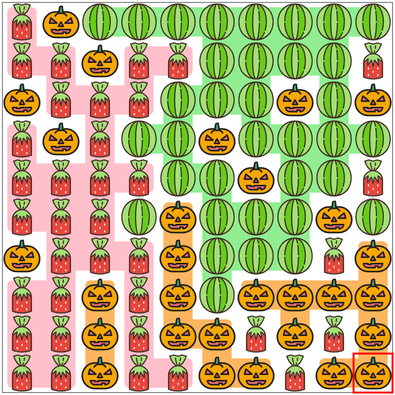

トヨタ自動車 プログラミングコンテスト2022 (AtCoder Heuristic Contest 015)¶

問題概要¶
- 10*10マスにキャンディが入る
- 最初はすべてのマスは空で、100個のキャンディを順番に入れていく
- キャンディは3種類あり、i番目にどの種類を入れるかはわかっているが、どこに入れるかは事前にはわからず、空マスから一様ランダムに選ばれる
- キャンディを入れるたびに、マス全体を前後左右に1度だけ傾けて、各キャンディを寄せることができる
- 最終的に、各キャンディの連結成分の要素数から計算されるスコアを最大化せよ
時間¶
- 240 分
個人的メモ¶
- 未来のキャンディの種類の情報をうまく活用できるか、が難しい問題
- ざっくり、各キャンディを各領域に固めるルールベース、シミュレーションで良い手を選ぶのが強かった模様
問題固有の性質¶
- すべてのキャンディの種類の情報が予め与えられている(未来の情報がわかる)
- ある種類を右に寄せたい場合、次がその種類なら、直前の操作を左にすれば、左側の空間にその種類を寄せることができる
- https://twitter.com/chokudai/status/1586663076023087104
- https://twitter.com/chokudai/status/1586669951666225152
- 素直な感覚的には「置かれたキャンディを動かすイメージ」で操作しようとしがち(2048のイメージ？)なので、その逆(全体を動かす)は発想として出にくかったかも
- 今のターンの種類ではなく、次のターンの種類の情報が使えるのでこのルールが適用できた
シミュレーション(モンテカルロ)¶
- ゲーム木探索的に見て、playoutで平均的にスコアが良い方向を選ぶことが考えられる
- これでも、nターン後までにするなど調整や工夫で130M点付近は出せる模様
ルールベース¶
- 問題固有の性質を使ったルールで各キャンディを各方向に固めることができる
- 種類Aを左に固めたいなら、次のターン種類Aなら方向Rにしておく、的な
- ただ、3種類のキャンディがあるため、左右以外に上下をうまく使う必要がある
- 具体的には、直前が方向Fで今がLかRにしたい場合は、状態を戻すためにLやRではなく方向Bにする、などしないとスコアがあまりでない(直前の方向の情報も使う)
- ルールベース133M点解
- キャンディの各個数はわかるので、個数に合わせて左右に割り当てるものを選んだり、嬉しくない手順が少なくなるように割当を決めておく、などで改善もできる
ルールベースでシミュレーション¶
- ランダムな方向や配置でplayoutする代わりに、上記のルールベースでシミュレーションすることで、より質の良いシミュレーションが可能
- 調整することで150M点近くまで狙える
- 最上位勢は、これにさらに、高速化や細かい調整を加えている模様
調整、高速化¶
- 特定方向は(シミュレーションには)使わない
- 配置の乱数は、最初に1回使って使い回す
- 1パターンだけでも良い模様？(方向が変われば配置位置が変わるので)
- 数十～数百パターン用意しておく、など
- プレイアウト回数をできるだけ揃える
- 最初の方のターンは少なくなってしまうので、多めに時間を割り当てる
- nターンで打ち切ってしまう
- など
- シミュレーション中、明らかに悪いスコアの方向は枝刈りする
- 最後の数ターン(7か8ターン)は全探索する
- 前半と後半でシミュレーション時のルールや探索候補を変える
評価関数¶
- シミュレーションについては、評価関数＋数ターン先読み/ビームサーチなども有効だった模様
- 評価関数
- 全体スコア
- 隣接でのスコア
- 2乗ではなく1.5乗から徐々に2乗にする
その他のアプローチ¶
- 盤面の特徴量をいろいろいれてOptunaでチューニング
その他¶
- 3色の経緯
- Seed=0満点解(チートあり)
解説¶
(50位まで&発言を見つけられた方のみ)
- 1位eijirouさん
- 2位tomerunさん
- 3位ymatsuxさん
- 4位ynasuさん
- 5位TABさん
- 6位hitonanodeさん
- 7位EmKさん
- 8位Nyaanさん
- 9位ebicochinealさん
- 10位Rafbillさん
- 11位primenumberさん
- 12位kawateaさん
- 13位heno239さん
- 14位ichyoさん
- 15位hitoareさん
- 16位fuppy0716さん
- 17位Gobiさん
- 18位itigoさん
- 19位sumoooruさん
- 20位sumitacchanさん
- 21位simanさん
- 22位highjumpさん
- 23位tsukasa_diaryさん
- https://twitter.com/tsukasa__diary/status/1586661779878268928
- https://twitter.com/tsukasa__diary/status/1586662442859315201
- https://twitter.com/tsukasa__diary/status/1586663229178060800
- https://twitter.com/tsukasa__diary/status/1586678458683633667
- https://twitter.com/tsukasa__diary/status/1586678208111710209
- 24位harmokeyさん
- 25位tanzakuさん
- 26位merom686さん
- 27位Haaさん
- 28位Aquariusさん
- 29位startcppさん
- 30位iwashi31さん
- 31位kotatsugameさん
- 32位LayCurseさん
- 33位420801さん
- 34位E869120さん
- 35位pointNさん
- 36位rabotさん
- 37位sj0389さん
- 38位tosca2020さん
- 39位shindanninさん
- 40位Shun_PIさん
- 41位rngさん
- 42位bowwowforeachさん
- 43位liqingyangさん
- 44位emthrmさん
- 45位ha15さん
- 46位okudeottuさん
- 47位komori3さん
- 48位sugarrrさん
- 49位m_buyohさん
- 50位HBitさん